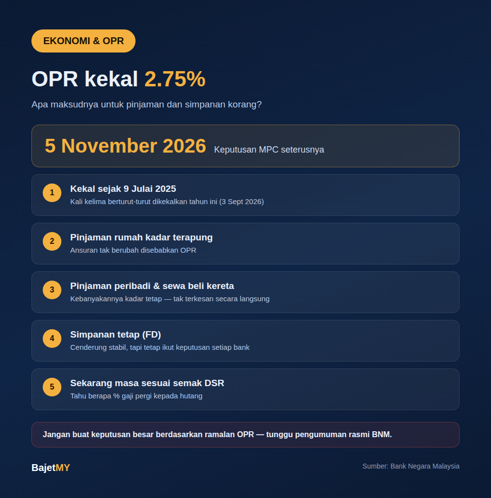

Pada mesyuarat 3 September 2026, Bank Negara Malaysia (BNM) sekali lagi mengekalkan Kadar Dasar Semalaman (OPR) pada 2.75% — kali kelima berturut-turut tahun ini. Kadar ini tidak berubah sejak BNM menurunkannya daripada 3.00% pada 9 Julai 2025.
Mesyuarat Jawatankuasa Dasar Monetari (MPC) terakhir untuk 2026 dijadualkan pada 5 November 2026.

OPR tu apa, ringkasnya?
OPR ialah kadar faedah rujukan yang ditetapkan oleh BNM. Bank menggunakannya sebagai asas untuk menetapkan kadar pinjaman dan simpanan. Bila OPR naik atau turun, kadar asas bank (Standardised Base Rate, SBR) biasanya bergerak sama arah, dan seterusnya kadar pinjaman berubah.
Untuk penjelasan lebih mendalam, baca artikel kami: Bagaimana Bank Negara Menentukan OPR.
Kesan OPR kekal pada korang
| Jenis | Kesan bila OPR kekal |
|---|---|
| Pinjaman rumah (kadar terapung) | Ansuran bulanan tak berubah disebabkan OPR |
| Pinjaman peribadi / kad kredit | Kebanyakannya kadar tetap — tak terkesan secara langsung |
| Sewa beli kereta | Kadar tetap sepanjang tempoh — pinjaman sedia ada tak berubah |
| Simpanan tetap (FD) | Kadar FD bank cenderung stabil, tapi tetap ikut keputusan setiap bank |
Maksudnya, untuk kebanyakan isi rumah, bulan-bulan ini agak "tenang" dari segi kadar faedah. Ini masa yang baik untuk semak komitmen tanpa tekanan kadar yang berubah-ubah.
Apa nak tengok pada 5 November?
Tiada siapa boleh pastikan keputusan MPC. BNM menilai inflasi, pertumbuhan ekonomi dan keadaan global sebelum membuat keputusan. Jika OPR diturunkan, ansuran pinjaman kadar terapung boleh turun sedikit tetapi pulangan FD juga cenderung turun. Jika dinaikkan, sebaliknya.
Apa korang boleh buat sekarang
- Semak jenis pinjaman korang — kadar terapung atau tetap. Hanya kadar terapung yang terus terkesan dengan OPR.
- Semak DSR — tahu berapa peratus gaji pergi kepada hutang. Guna kalkulator DSR Bajet MY.
- Bandingkan kadar FD antara bank — walaupun OPR sama, kadar setiap bank tak semestinya sama.
- Jangan buat keputusan besar berdasarkan ramalan OPR — tunggu pengumuman rasmi BNM.
Sumber
- Bank Negara Malaysia — Kenyataan Dasar Monetari & Jadual Mesyuarat MPC 2026